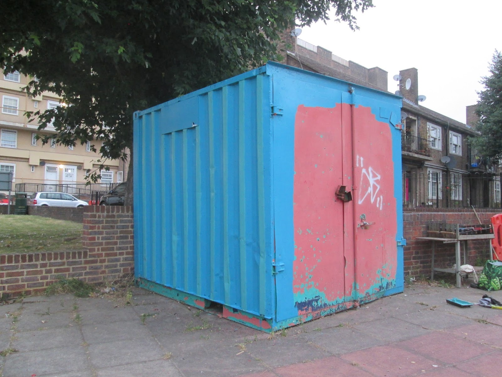
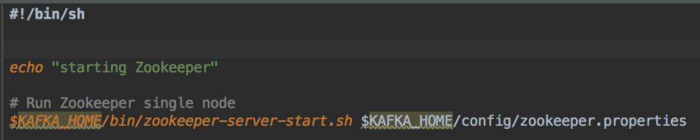

Kafka on Docker
Containerize it all
Hi, my name is Tom.
Developer
Ordina Belgium
@tomvdbulck
https://github.com/tomvdbulck
Agenda
- Kafka
- Zookeeper
- Docker
- All in One
- Scale Up
- Kafka Monitor
Kafka
Kafka

4 Core API's

4 Core API's
- Producer API: publish to a topic
- Consumer API: subscribe to a topic
- Streams API: stream processor
- Connector API: resuable producers and consumers
Topics and Logs

Topics and Logs
- The cluster retains all published records
- The consumer controls its offset
- Low overhead per consumer
Partitions
- Allow the system to scale.
- Are replicated
- Each partition has 1 leader
- Guarantees order of records
Producers
- Will assign record to a partition
- Round Robin or based on a key
Consumers
- Consumers are part of a Consumer Group
- 1 record published to 1 consumer instance
- Partitions will determine max. # of consumers
- Scalable within a Consumer Group
Kafka Streams

Kafka Streams

A Storage System
- Kafka is a very good storage system
- Written to Disk and Replicated
- No Performance Loss
- https://www.confluent.io/blog/okay-store-data-apache-kafka/
A Messaging System
Traditionally 2 models
- Queueing: process record once
- Publish and Subscribe: broadcast
The Consumer Group
- Divide Processing - like with a queue
- Broadcast to multiple consumer groups - like publish-subscribe
- Stronger Ordering Guarantees
Zookeeper
Zookeeper

Zookeeper
- Distributed Coordination Service
- For Distributed Applications
- File system like Structure
Why does Kafka Need it
- Electing a Controller
- Cluster Membership
- Topic Configuration
- Quotas
- ACL: Who is allowed to read and write
Docker

Docker
- Build: standardized way using Docker CLI in a DockerFile
- Ship: share the container - it is just a file
- Run: less overhead then a VM
Docker Compose
- Multi-container applications
- docker-compose.yml
- Software defined network
1 Container
The Goal
1 container with both Zookeeper and Kafka
Why?
DockerFile

DockerFile

Startup Scripts
Startup Scripts

Get Started: Start the Container
Create the image
docker build -t kafka-zookeeper .
Startup the container
docker run --name a_name -i -t -p 2181:2181 -p 9092:9092 kafka-zookeeper
Get Started: Start the Container
Access Kafka from outside the container: add the following parameters
-e ADVERTISED_HOST=localhost -e ADVERTISED_PORT=9092
Get Started: Topics
1 container with both Zookeeper and Kafka
> bin/kafka-topics.sh --create --zookeeper localhost:2181
--replication-factor 1 --partitions 1 --topic test
Retrieve a list of topics on Zookeeper
> bin/kafka-topics.sh --list --zookeeper localhost:2181
Describe a topic: leader / replicated nodes
> bin/kafka-topics.sh --describe --zookeeper localhost:2181
Get Started: Produce and Consume
Produce
> bin/kafka-console-producer.sh --broker-list localhost:9092 --topic test
This is a message
This is another message
Consume
> bin/kafka-console-consumer.sh --bootstrap-server localhost:9092
--topic test --from-beginning
Scale Up

Origin
Nested slides are useful for adding additional detail underneath a high level horizontal slide.
Kafka Monitor
Origin
Nested slides are useful for adding additional detail underneath a high level horizontal slide.
Questions ?
Thanks for watching!
Now kick some ass!